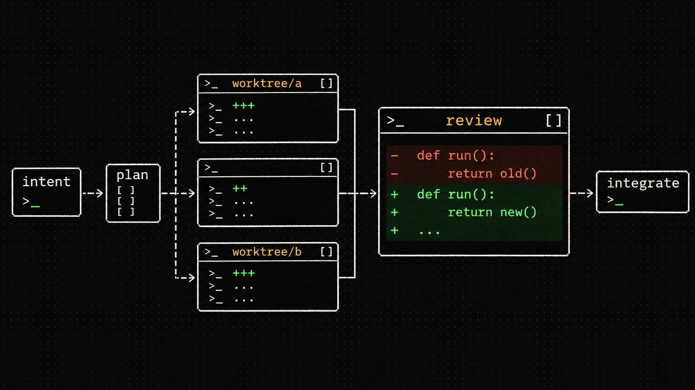
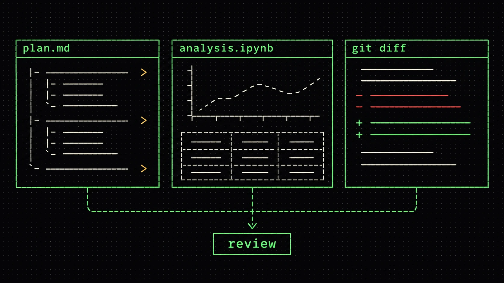
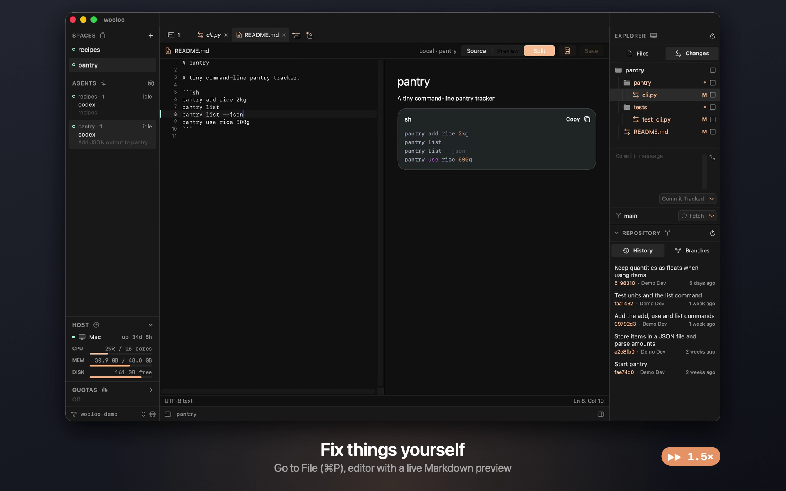
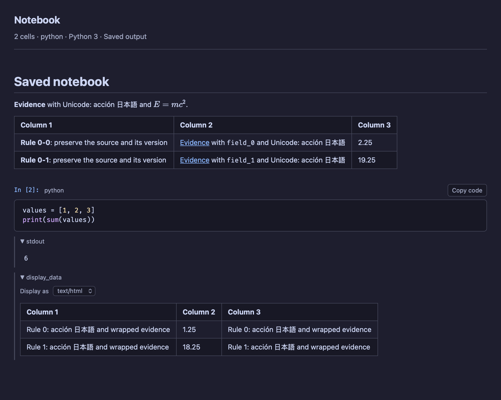
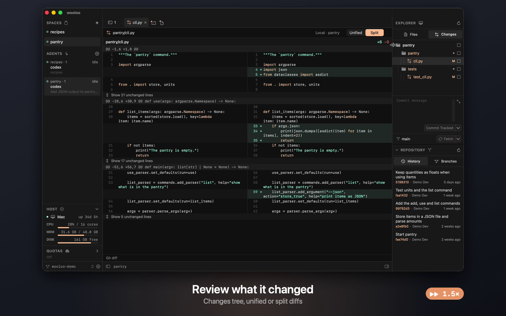
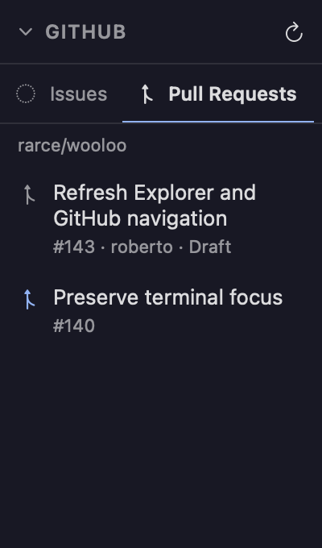

ADE vs IDE: from writing code to shaping software
Coding agents change what we need from a development environment. Here is how to think about the workflow, where the alternatives fit, and why wooloo puts review and supervision at the center.

When an agent is implementing a change, the next useful action may be reading its proposal, checking a result, or answering a question. The code editor still matters, but so do the artifacts and decisions around it.
That is the starting point for wooloo: bring the essential tools of an IDE into a workspace organized around supervising agents and reviewing their work. A Markdown proposal, a notebook's results, a Git diff and a running terminal are different views of the same task.
The practical distinction: an IDE brings tools together for working directly in code. An ADE, or agentic development environment, organizes the loop of giving agents context, following their progress, evaluating their output and deciding what to integrate. Modern tools increasingly support both.
What changes between an IDE and an ADE?
An integrated development environment (IDE) combines tools such as an editor, navigation, a debugger, build commands and source control. Its familiar loop is to make a change, run it, inspect the behavior and adjust.
In an agentic development environment (ADE), some of that implementation loop is delegated. The developer defines the goal and constraints, supplies context, follows execution and checks the evidence. The environment needs to make those handoffs understandable.
ADE is an emerging product category. We use it here as a description of a workflow, rather than a certification or a fixed feature checklist. Warp's explanation of ADE describes agents carrying out multiple steps under developer supervision. Meanwhile, Cursor's agent already edits files and runs commands inside an editor. The categories overlap.
For choosing a tool, I find a more useful question is: what does the environment help me understand and decide while work is happening? Agent visibility, readable proposals, inspectable results and clear Git changes become central parts of that answer.
The agentic development workflow, step by step
Consider a small feature: add JSON output to a command-line tool while preserving its existing text output. A useful agent brief identifies the expected behavior, compatibility constraints, relevant files and how to verify the result. The workflow then has several distinct handoffs.
A supervised development loop
- ScopeDefine the outcome and acceptance checks.
- PrepareChoose context, branch and working directory.
- DelegateAsk an agent to propose or implement.
- SuperviseRead the plan and resolve blockers.
- VerifyInspect artifacts, diffs and test evidence.
- IntegrateCommit the reviewed change and open a PR.
Feedback can send the task back to its scope, proposal or implementation.
Context becomes a working artifact. A short Markdown plan can record assumptions and alternatives before the agent changes files. Keep it with the project so both the agent and the developer can refer to the same decisions.
Parallel work needs boundaries. If two tasks touch the same checkout, they can interfere with each other. Separate Git worktrees give them separate working directories while sharing repository history. A worktree is useful task isolation; it does not provide a security sandbox or isolate shared ports, databases and external services.
Completion starts a review. An agent's status tells you where to direct attention. The actual result still needs scrutiny: does the diff match the scope, do the tests exercise the requested behavior, and can someone else reproduce the evidence?
Open-source and commercial ADE alternatives
Several tools support parts of this loop. The comparisons below describe their documented approaches, rather than a benchmark or a ranking. Start with the handoff you need help with: organizing terminals, isolating tasks, reviewing changes or running work away from your desktop.
| Tool | Workflow emphasis | Source and service model |
|---|---|---|
| cmux | A macOS terminal with vertical tabs and notifications for following several coding agents. | Open-source desktop under GPL-3.0-or-later; server components have separate BSL terms. Check the repository's license scope. |
| Emdash | An agent workspace for running multiple coding agents in parallel with your chosen providers. | Open source under Apache-2.0. Agent access and provider costs are separate. |
| Paradev (formerly Superset) | CLI agents, terminals, code review and browser previews together in a workspace. | The current repository lists MIT licensing and a free desktop app, with optional services on top. |
| Conductor | A task workspace around a Git worktree, with agent execution, review and integration; also offers cloud workspaces. | A commercial product with free local and paid cloud/team offerings. Check its current plans and agent requirements. |
| Warp | A terminal-centered agent environment, with agent tooling and cloud execution options. | Offers free and paid services. Its pricing page separates included features and usage allowances. |
| Cursor | Agent work close to the editor: codebase exploration, file edits and terminal commands. | A commercial editor and agent product; useful when direct editing and agent work belong in the same loop. |
The agent itself is another layer. Claude Code and Codex CLI can inspect code, change files and run commands from a terminal. An environment around them adds ways to organize and inspect that work. Evaluate the environment, the agent and the execution service separately.
Sources checked November 6, 2026. Licenses, names, plans and hosted offerings can change; follow the linked primary sources when evaluating a tool. A free or open-source environment does not make model usage free.
How wooloo brings IDE tools into agent supervision
wooloo is a native macOS app built around Herdr's terminal sessions. Its emphasis is on keeping the task, its agent and its review material close together. The editor is available when you need to inspect or adjust code, alongside the other artifacts that help you evaluate the work.

Read the proposal in Markdown
Ask the agent to write its approach as a Markdown file in the project. Open it in wooloo to read the rendered document, tables and Mermaid diagrams. You can evaluate the plan and return to the agent's terminal with specific feedback from the same workspace.
This makes planning a concrete review step: check assumptions, the intended scope and the proposed validation before implementation expands. Source, preview and split views also help when you need to revise the document.


Inspect results in Jupyter notebooks
For data work, a diff alone may not communicate the outcome. Ask the agent to save its analysis in a Jupyter notebook with outputs, then inspect the cells, tables and supported output formats in wooloo. A reviewer can compare the explanation, the code and the saved results without leaving the app.
wooloo renders saved notebook outputs and supports cell editing and notebook diffs. Kernel execution happens outside this viewer. Before accepting an analysis, check how the notebook was produced and whether its outputs are current and reproducible.


Follow the task and review its changes
Spaces, tabs and split panes organize the terminal work. The Agents list shows each recognized agent's location and state. Notifications and unread indicators help you return when a task finishes or requires input. Detection depends on Herdr's supported agents and integrations; a completion indicator is an attention signal.
From the Changes tree, open a unified or split diff, inspect changed files, stage them and write a commit. Repository history, branches and worktrees provide context for integration. You can make a small correction in the editor or send the issue back to the agent.


Keep repository issues and PRs in view
The GitHub panel lists open issues and pull requests for the selected Space's repository. It keeps the task queue and incoming changes visible alongside the local work. It uses GitHub CLI authentication on that Space's host; selecting an item opens its details in the browser.


Separate the workspace from the running session
Herdr's server owns the terminal processes, layout and terminal state. wooloo renders those terminals natively and adds file, document and Git views. The same sessions remain accessible from Herdr's TUI.
Who owns what?
Quitting wooloo leaves the Herdr server and its agents running, so you can reconnect. That persistence depends on the host and server staying alive; it does not keep a local agent working while the Mac is asleep or powered off. Saved session restoration after a restart is a separate concern.
wooloo is MIT licensed and includes Herdr. Install and authenticate your agent CLIs separately; their accounts, subscriptions and provider data handling remain their own. See the setup instructions and connection and privacy details.
A supervised workflow to try in wooloo
Start with one bounded task, such as the JSON-output example. Establish the review loop before adding parallel agents.
- Anchor the task. Pick an issue and write down the expected behavior, compatibility requirements and acceptance checks. The GitHub list helps keep the repository's open work visible.
- Prepare its workspace. Open the project as a Space. For concurrent changes in the same repository, create separate worktrees and open their directories as separate Spaces. Multiple Spaces pointing at one directory still share the same files.
- Review a proposal. Start your installed agent CLI in a terminal and ask it to write a short Markdown plan. Read that plan in wooloo and resolve assumptions before implementation.
- Follow execution. Let the agent implement the agreed scope. Use its terminal and status to see progress, answer questions and redirect it when necessary.
- Inspect the evidence. Review the Git diff and run the relevant checks in a terminal. For analysis tasks, inspect a notebook's saved outputs and verify how they were generated. Ask for corrections where the result falls short.
- Integrate deliberately. Stage the reviewed files and commit. Use your normal GitHub CLI or browser workflow to open the PR; the GitHub panel then helps you see the repository's open PRs.
The environment's value here is continuity: moving from a proposal to a terminal, from a terminal to a notebook, and from the result to a diff while keeping the task's context close at hand.
Should wooloo move toward unattended workflows?
Some products put cloud execution and asynchronous delegation at the center of their offering. Conductor's cloud workspaces and Warp's cloud options are examples of that direction. They address a different handoff: giving a task to an environment that can continue independently of a developer's desktop session.
wooloo has so far prioritized a workspace where a developer stays close to proposals, execution and review. Persistent terminals support that workflow, but persistence alone does not define an unattended development system.
Should wooloo take a larger role in unattended work as agentic software development evolves? That is an open product question. The answer should emerge from discovery: how developers divide work, where they need to intervene, which artifacts make results trustworthy, and what they actually want to hand off.
As agents and practices change, we need to learn where supervision belongs and which decisions people want to retain. That learning should shape wooloo's direction. It is a question to explore with users, rather than a commitment to a particular next feature.
Common questions about ADE workflows
Does an ADE replace an IDE?
The workflows can coexist. Debugging, refactoring and direct editing may still happen in your preferred IDE, while an agent workspace helps you delegate tasks and review their output. Some products combine both approaches.
Is wooloo a coding agent?
wooloo is the native workspace around your agents and review material. Agent CLIs perform the coding work in Herdr terminals. You choose, install and authenticate those CLIs yourself.
Can I review notebooks and GitHub work inside wooloo?
You can inspect notebooks with saved outputs and browse open GitHub issue and PR lists in the Space. Notebook kernel execution is external, and opening an issue or PR's full details takes you to the browser.